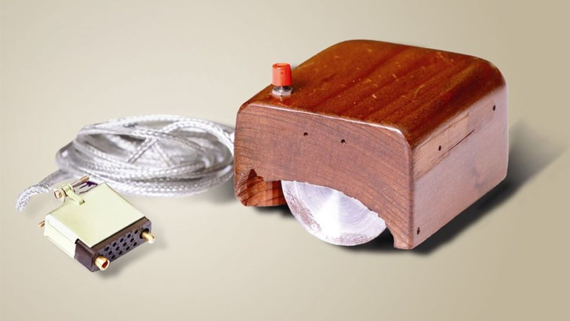

1968 - first mouse prototype
Douglas Engelbart demonstrates a prototype of a modern computer at the Fall Joint Computer Conference, San Francisco. His presentation, titled "A Research Center for Expanding Human Intelligence," includes a live demonstration of the computer, including a mouse and a graphical user interface (GUI), reports the Doug Engelbart Institute.
.jpg) The Macintosh was the first successful computer with a mouse-driven graphical user
interface and was based on the Motorola 68000 microprocessor. Its beige case consisted of a 23 cm CRT monitor and came with a keyboard and mouse.
The Macintosh was the first successful computer with a mouse-driven graphical user
interface and was based on the Motorola 68000 microprocessor. Its beige case consisted of a 23 cm CRT monitor and came with a keyboard and mouse.